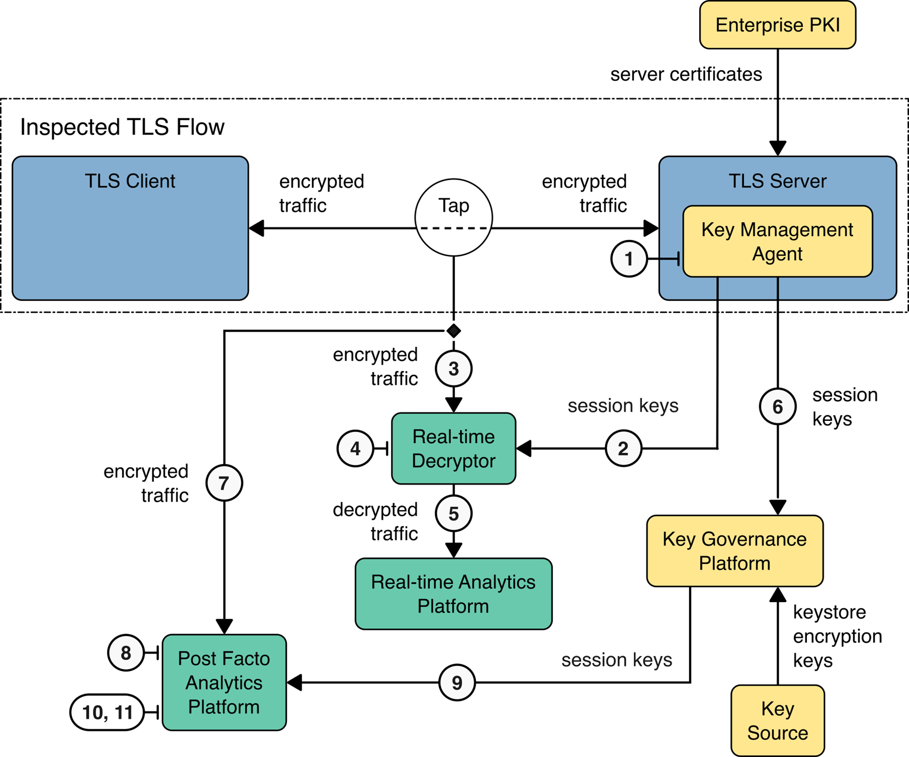
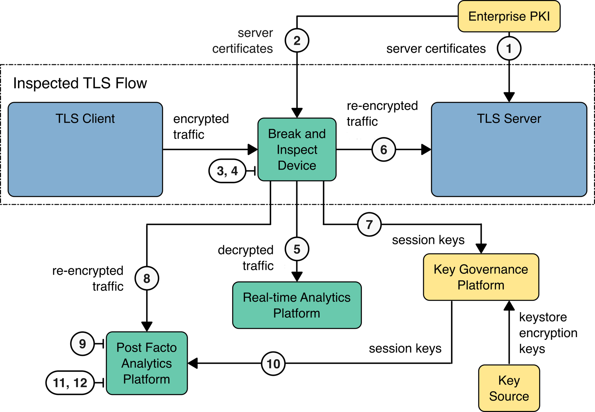

Build Implementation#
The builds described in this volume are implementations of the TLS 1.3 visibility reference architectures described in Section 3. The first reference architecture achieves visibility into TLS 1.3 traffic by active management provisioning and using bounded-lifetime DH keys on the TLS server. For real-time visibility, an internal decryptor leverages the known DH key and information in the captured TLS handshake to determine the session key to decrypt the traffic. Similarly, for post-facto visibility, the analytics platform uses the known DH key and information in the captured TLS handshake to identify and determine the session key needed to decrypt the traffic.
The second reference build achieves visibility by capturing and exporting the TLS session key negotiated between a TLS client and TLS server to the key governance platform. For real-time visibility, an agent on the TLS server captures the session key as it is generated and immediately registers the session key material. For performance reasons, this build initially sends the key material to the decryptor, which registers the key material in the key governance platform. The decryptor then uses the session key to decrypt the session.
Finally, two reference builds achieve visibility through the breaking and inspection of TLS traffic using a middlebox. One middlebox builds and operates on traffic at the OSI Layer 3 level, and the other operates on the OSI Layer 2. There are two TLS sessions: the first between the TLS client and the middlebox and the second between the middlebox and the TLS server. The decrypted traffic is copied between the two connections. To support post-facto decryption, the TLS session keys of one or both TLS sessions are registered with the key governance platform
Each architecture contains a subset of 12 components, including TLS 1.3 servers, TLS 1.3 clients, network tap(s), break and inspect middlebox(es), real-time TLS traffic decryption, real-time TLS traffic analysis, post facto traffic decryption and analysis, key management agents, key capture and registration agents, enterprise PKI, key governance, and key sources. The build’s demons generate or capture sensitive key material, and each one ensures that:
Sensitive key material generated by or captured in the key governance platform is stored in encrypted form with access to the master encryption key managed by a hardware security module.
All key material is transferred between components only on the dedicated, limited-access network using TLS or SSH connections.
Passive Inspection Architecture Builds#
Passive inspection architectural options support the capture of traffic from monitored network segments, providing mechanisms to decrypt the traffic for immediate analysis or forwarding encrypted traffic for storage structured with session information and the appropriate key information. This approach does not terminate or otherwise modify traffic between the TLS clients and servers.
Bounded-Lifetime Key Pair (Bounded-Lifetime Diffie-Hellman)#
For TLS using bounded-lifetime key pairs, the key governance platform provisions the TLS server with bounded-lifetime DH key pairs via a key management agent running on the server. The TLS server then uses the provisioned key pairs instead of performing ephemeral generation during the normal TLS handshake. Due to differences in definitions of “ephemeral,” the bounded-lifetime DH key pairs are considered ephemeral keys in RFC 8446 and static keys in SP 800-56A. The key governance platform provisions the server with new bounded-lifetime DH key pairs on a frequent basis via the agent. A decrypt platform that has the bounded-lifetime DH key pairs used by the TLS server to establish TLS sessions can decrypt all TLS sessions to the server for the period during which the server uses those DH key pairs. The figure below depicts the elements involved in the bounded-lifetime DH demonstration. Both post-facto and real-time decryption capabilities are illustrated. The descriptive detail for passive inspection using bounded lifetime DH is provided in E.2 Architecture Implementation: Passive Inspection Using Bounded-lifetime DH Keys.

Bounded-Lifetime DH Passive Inspection Elements#
Real-Time (RT) Decryption#
The demonstration of real-time decryption using bounded-lifetime DH keys executed the following sequence:
Before an epoch* begins, the Key Governance Platform generates a new bounded-lifetime DH key pair and pushes it to the TLS Server and the RT Decryptor.
When the epoch begins, the Key Management Agent configures the TLS Server to use the new bounded-lifetime DH key pair to negotiate a new TLS session with the client.
The Network Tap captures encrypted packets between client and server and forwards them to the RT Decryptor.
The RT Decryptor calculates the symmetric session keys from the captured TLS handshake and the known server key pair.
The traffic is decrypted using the calculated session symmetric keys.
The decrypted traffic is forwarded to the RT Analytics Platform.
*An epoch is the rotation period for keys determined by the enterprise key governance platform.
Post-Facto Decryption Flow#
The demonstration of storage of traffic for post-facto decryption and analysis using bounded-lifetime DH keys executed the following sequence:
Before an epoch begins, the Key Governance Platform generates a new bounded-lifetime DH key pair and pushes it to the Key Management Agent on the TLS Server (and RT Decryptor).
When the epoch begins, the Key Management Agent configures the TLS Server to use the new bounded-lifetime DH key pair to negotiate a new TLS session with the client.
The Network Tap captures encrypted packets between client and server and forwards them to the Post-Facto Analytics Platform for capture and storage.
The Post-Facto Analytics Platform selects the stored traffic stream to be decrypted.
On a per-traffic stream basis, the Post-Facto Analytics Platform requests the server key pair from the Key Governance Platform using the TLS Server and the epoch of the traffic stream.
The Post-Facto Analytics Platform uses a PKCS#11 exchange to send information from the TLS handshake to the Key Governance Platform, which uses the server key pair to calculate and return the session keys. This means the Analytics Platform doesn’t require access to the server keys.
The traffic is decrypted using the calculated symmetric keys.
Decrypted traffic is now available for analysis.
(Note: Key stores are generated by the Key Governance Platform.)
Bounded-Lifetime DH Passive Inspection Laboratory Build Components#
The software or services used for each of the architecture components in the lab build for this reference architecture are in the table below.
Architecture Component |
Co llaborator |
Product Information |
|---|---|---|
Enterprise PKI |
DigiCert |
|
TLS Client |
|
|
Tap |
|
|
TLS Servers |
|
|
Key Management Agent |
NotForRadio |
|
Real-time Decryptor |
MIRA |
|
Key Governance Platform |
AppViewX |
|
Real-time Analytics Platform |
NetScout |
|
Post Facto Analytics Platform |
|
|
Key Source |
Thales TCT |
|
Installation and Configuration for Bounded Lifetime Diffie-Hellman#
Instructions for installation and configuration of bounded lifetime DH builds are here: E.2 Architecture Implementation: Passive Inspection Using Bounded-lifetime DH Keys.
Decryption Using Exported Session Keys#
In the exported session key approach, decryption is achieved by either obtaining TLS session keys from the key governance platform or receiving them from the Session Key Capture agent for real-time decryption. This architecture uses agents operating on the TLS servers to capture the ephemeral session keys at the time they are negotiated for a TLS flow. In the case of capture of encrypted flows for post-facto or historical analysis, these agents register the captured keys with the key governance platform. These keys can be retrieved from the key governance platform using the TLS session’s client-random-id as the flow identification mechanism. This decrypt mechanism works regardless of the TLS version and cipher suite negotiated between the client and server. The figure below depicts the elements involved in demonstrating inspection using exported session keys. Both post-facto and real-time decryption capabilities are illustrated.
{kind=link}

Passive Inspection Using Exported Session Keys#
Real-Time (RT) Decryption#
The demonstration of real-time decryption using exported session keys executed the following sequence:
When the TLS Server negotiates a new TLS session with the client, the Key Capture and Registration Agent sniffs the negotiated session key.
The Key Capture and Registration Agent sends the session key and client-random-id* to the RT Decryptor and to the Key Governance platform.
The Network Tap captures encrypted packets between client and server and forwards them to the RT Decryptor.
The RT Decryptor identifies the flow using the client’s random ID and then uses the session key to decrypt the traffic.
The decrypted traffic is forwarded to the RT Analytics Platform.
The RT Decryptor sends the session key and client-random-id to the Key Governance Platform to support post-facto decryption.
*The client-random-id is a plaintext field in the TLS specification that uniquely identifies the TLS session.
Note: Each connection between a server and a client generates a new session key/client-random-id pair. The volume of key material that requires storage can be very large as it increases one-to-one with the volume of traffic. Forward secrecy is maintained.
Post-Facto Decryption (follows RT Decryption steps)#
The demonstration of decryption for post-facto analysis using exported session keys follows the real-time decryption sequence shown in Section 5.1.5. above:
The Network Tap captures encrypted packets between client and server and forwards them to the Post-Facto Analytics Platform.
The Post-Facto Analytics Platform selects the traffic stream to be decrypted.
On a per-traffic stream basis, the Post-Facto Analytics Platform requests the session key from the Key Governance Platform using the client-random-id from the captured TLS handshake as the lookup key.
The traffic is decrypted using the session key.
Decrypted traffic is available for analysis.
Exported Session Key Laboratory Build Components#
The software or services used for each of the architecture components in the lab build for this reference architecture can be found in Table 4-2: Build Components for the Passive Decryption Using Exported Session Keys Reference Architecture.
Exported Session Keys Reference Architecture
Architecture Component
Co llaborator
Product Information
Enterprise PKI
DigiCert
CertCentral Certificate Management Platform
TLS Client
Mozilla Firefox Browser
Microsoft Edge Browser
Command-line Email Client & Mozilla Thunderbird
Tap
VMWare vSphere Distributed vSwitch port mirroring
TLS Server(s)
Containerized NGINX reverse proxy and Keycloak IdAM application
Containerized NGINX reverse proxy and Python test application
Containerized NGINX proxy server
MariaDB Database Server
Containerized Postfix SMTP Server and Dovecot IMAP Server
Key Capture and Registration
Not For Radio
Encryption Visibility Architecture Encryption Visibility Agent (EVA) Version 0.7.0
Real-time Decryptor
MIRA
Key Governance Platform
AppViewX
Real-time Analytics Platform
NetScout
nGeniusONE Version 6.3.5 build 3184
Post Facto Analytics Platform
vSTREAM ISNG Version 6.3.5 build 3184
vCYBERSTREAM ISNG Version 6.3.5 build 3184
Key Source
Thales TCT
Installation and Configuration for Exported Session Key Approach#
Instructions for installation and configuration of an exported session key builds can be found in E.3 Architecture Implementation: Passive Inspection Using Exported Session Keys.
Break and Inspect Using Middleboxes#
The B&I middlebox architecture supports capturing incoming traffic. It also sends tapped decrypted traffic to an analytics platform, generating traffic re-encrypted using new session keys negotiated between the B&I device and the client and/or server, and passes re-encrypted traffic from the B&I component to an enterprise network server for routing to the enterprise’s in-house consumers. The architecture also includes a connection between the server and B&I components to the enterprise PKI infrastructure. Traffic capture c between the client and the B&I device, the B&I device and the server, or both is possible. To enable subsequent analysis of captured encrypted data, provide the session keys between the client and the B&I device, the B&I device and the server, or both, to the key governance platform. With the middlebox (break and inspect) approach, each TLS connection is terminated at the middlebox. The middlebox then initiates a second TLS connection to the target TLS server. The middlebox copies the decrypted TLS payload from the first TLS connection to the second TLS connection while passing the clear text of the traffic to the Real-time Analytics Platform. Finally, the middlebox registers the ephemeral session key for each secondary connection with the Key Governance Platform. The post facto analytics platform can retrieve the ephemeral keys by querying the Key Governance Platform using the client’s random identifier for the TLS session to be decrypted. The descriptive detail for active inspection using middleboxes is provided in E.4 Architecture Implementation: Active Inspection Using Middleboxes.
The figure below depicts the architectural elements involved in demonstrating visibility using a middlebox. Note: Although real-time and post-facto decryption is shown in the architecture drawing, only real-time decryption has been demonstrated as of this writing. Traffic is re-encrypted for transmission to the post-facto traffic capture platform within the data center.
{kind=link}

Middlebox Break and Inspect Demonstration Elements#
Real-Time (RT) Decryption#
The real-time break and inspect process executes the following steps:
TLS Server certificates are provisioned on the appropriate TLS Server.
All TLS Server certificates and private keys are loaded into the middlebox.
The TLS client negotiates a TLS session with the middlebox. Simultaneously, the middlebox negotiates a new TLS session with the intended destination TLS Server.
The traffic from the incoming TLS session is decrypted by the middlebox using the session key for the TLS session to the client.
The decrypted traffic is forwarded to the RT Analytics Platform.
The decrypted traffic is copied to the TLS session with the intended destination TLS Server after being encrypted with the session key for this session.
The middlebox exports the session key and client-random-id pair of the TLS session between the middlebox and the intended destination TLS Server to support post-facto decryption. Note: The session keys will differ for the client-to-B&I session and the B&I-to-server session. The session keys for the two sessions can be exported.
Post-Facto Decryption (follows RT Decryption steps)#
The demonstration of decryption for post-facto analysis using middlebox B&I processes will execute the following sequence that follows the real-time decryption sequence shown above:
The Network Tap captures encrypted packets between the middlebox and server and forwards them to the Post-Facto Analytics Platform.
The Analytics Platform selects the traffic stream to be decrypted.
Per the traffic stream, the Analytics Platform requests the session key from the Key Governance Platform, and the Key Governance Platform provides the session key to the Analytics Platform.
The traffic is decrypted using the session key.
Decrypted traffic is available for analysis.
Middlebox Laboratory Build Components#
The lab has two builds of this reference architecture: one that operates on traffic at the OSI Layer 3 level and one that operates on the OSI Layer 2 level.
Layer 3 Build#
In the lab build for the Layer 3 version of this reference architecture, the software or services used for each of the architecture components are in Table 4-3: Build Components for the Break and Inspect Decryption Reference Architecture (Layer 3 Implementation).
Decryption Reference Architecture (Layer 3 Implementation)
Architecture Component
Co llaborator
Product Information
Enterprise PKI
DigiCert
CertCentral Certificate Management Platform
TLS Client
Mozilla Firefox Browser
Microsoft Edge Browser
Command-line Email Client & Mozilla Thunderbird
Break and Inspect Device
(Layer 3)
F5
BIG-IP SSL Orchestrator Version 17.0.0 build 0.0.22
TLS Server(s)
Containerized NGINX reverse proxy and Keycloak IdAM application
Containerized NGINX reverse proxy and Python test app
MariaDB Database Server
Postfix SMTP Server and Dovecot IMAP Server
Key Governance Platform
AppViewX
Redis database
Real-time Analytics Platform
NetScout
nGeniusONE Version 6.3.5 build 3184
Post Facto Analytics Platform
vSTREAM ISNG Version 6.3.5 build 3184
vCYBERSTREAM ISNG Version 6.3.5 build 3184
Key Source
Thales TCT
F5 BIG-IP SSL Orchestrator (SSLO) provides an all-in-one appliance solution designed specifically to optimize the SSL infrastructure, provide security devices with visibility of TLS-encrypted traffic, and maximize the efficient use of existing security resources. The SSL Orchestrator makes encrypted traffic visible to security solutions and optimizes existing security elements. It delivers dynamic service chaining and policy-based traffic steering by applying context-based intelligence to encrypted traffic handling to intelligently manage the flow of encrypted traffic across the security stack.
Layer 2 Build#
The lab build for the Layer 2 version of this reference architecture uses the software or services for each of the architecture components found in the table below.
Decryption Reference Architecture (Layer 2 Implementation)
Architecture Component
Co llaborator
Product Information
Enterprise PKI
DigiCert
CertCentral Certificate Management Platform
TLS Client
Mozilla Firefox Browser
Microsoft Edge Browser
Command-line
Break and Inspect Device
(Layer 2)
MIRA
TLS Server(s)
Containerized NGINX reverse proxy and Keycloak IdAM application
Containerized NGINX reverse proxy and Python test app
MariaDB Database Server
Postfix SMTP Server and Dovecot IMAP Server
Key Governance Platform
AppViewX
Redis database
Real-time Analytics Platform
NetScout
nGeniusONE Version 6.3.5 build 3184
Post Facto Analytics Platform
vSTREAM ISNG Version 6.3.5 build 3184
vCYBERSTREAM ISNG Version 6.3.5 build 3184
Key Source
Thales TCT
Mira ETO software supports B&I mode on all types of appliances, physical and virtual (KVM and ESXi), and when deployed in the public cloud (AWS). In this project architecture, the Mira ETO is installed inline and can provide real-time decryption and re-encryption of TLS traffic to maintain an end-to-end TLS connection between the client and the server. Inline interfaces (real or virtual) create a bump in the wire. Decrypted versions of the traffic can be sent to both passive and inline tools. Passive tools consume the decrypted stream and generate alerts. Inline tools process the decrypted stream, then return it (potentially modified) to the ETO for re-encryption before it travels to the client or server. There is a single interface for passive tools and two interfaces for inline tools.
Installation and Configuration for Active Middlebox Approach#
Installation and Configuration for Layer 3 Build#
Instructions for the installation and configuration of the Layer 3 active middlebox build can be found at E.4.4 Layer 3 Middlebox Implementation: F5 BIG-IP.
Installation and Configuration for Layer 2 Build#
The instructions for the installation and configuration of the Layer 3 active middlebox build are here: E.4.3 Layer 2 Middlebox Implementation: MIRA ETO.
NCCoE Laboratory Physical Architecture#
The descriptive detail for the TLS 1.3 Visibility Laboratory Architecture is provided at Architecture and Networking details..